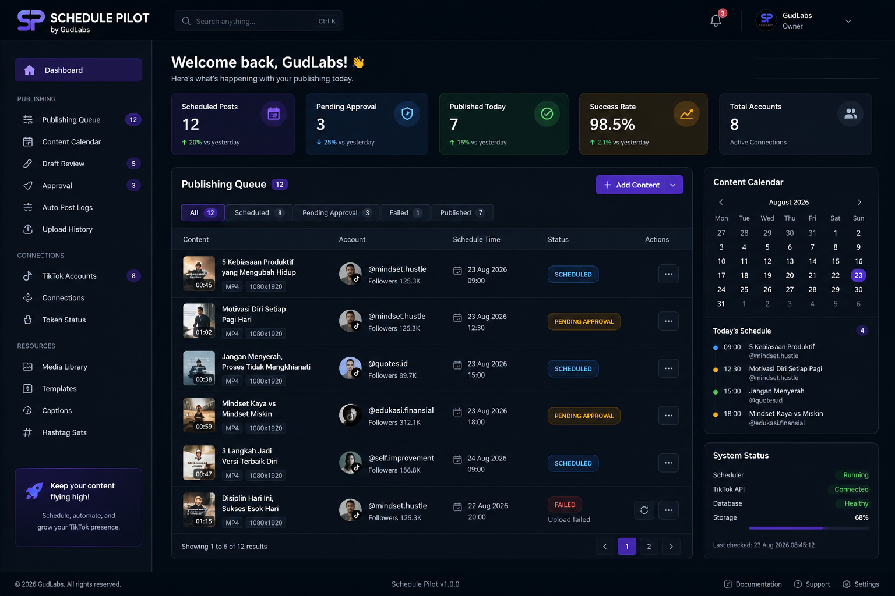

Understand the account. Plan the content. Publish with control.
Schedule Pilot by GudLabs brings authorized TikTok account insights, creator-specific planning and creator-approved publishing into one desktop workflow. Internal services stay separated by capability, while creators work through one consistent product experience.

A creator workflow from account context to publishing.
Schedule Pilot presents a unified product while GudLabs keeps analytics, planning and publishing responsibilities separated behind clear internal boundaries.
Connect the creator
Creators authorize their own TikTok accounts. Schedule Pilot displays the connected identity and uses only the permissions the creator grants.
Understand performance
Authorized profile information, account statistics and recent public videos provide creator-specific context for insights and planning.
Prepare and publish
Creators preview media, edit metadata, choose supported post settings, approve the package, schedule it and track publishing status.
Authorization is creator-controlled.
Schedule Pilot uses TikTok Login Kit and authorized TikTok APIs for account identity, creator insights, recent public videos, draft handoff and Direct Post workflows. Availability remains subject to the creator's permissions, TikTok API eligibility and platform policies.
Built by GudLabs for creator operations.
Schedule Pilot is independent software and is not affiliated with or endorsed by TikTok. TikTok account access and publishing are performed through creator authorization and supported platform APIs.